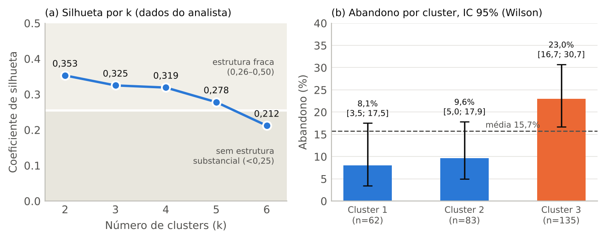
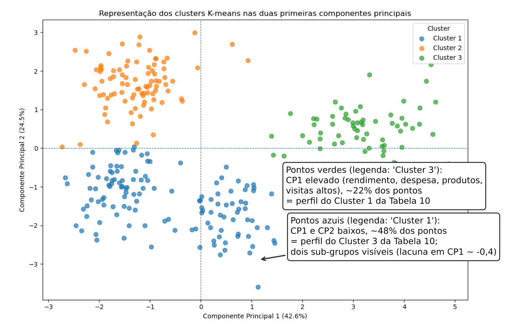

A empresa pretende compreender o perfil dos clientes, identificar segmentos distintos e dispor de um sistema para classificar novos clientes. O analista apresentou um relatório (R5) com análise descritiva, bivariada, Análise de Componentes Principais (PCA) e K-means sobre 300 clientes e 19 variáveis. Como consultor independente, avalio as opções metodológicas, a interpretação dos resultados e a validade das conclusões, sem reproduzir toda a análise; limitei-me a verificar a consistência interna dos números publicados (Anexo B).
| Etapa | Avaliação | Razão principal |
|---|---|---|
| Dados e valores em falta | Parcialmente adequada | Eliminação listwise aceitável pela dimensão, mas sem testar o mecanismo de falta; sem tratamento de outliers; variáveis sem definição. |
| Análise bivariada | Parcialmente adequada | Testes corretos, mas Pearson em variáveis assimétricas/discretas, V de Cramér com erro e sobre-interpretação do método de pagamento (p = 0,065). |
| PCA | Adequada, com falhas | Escolha de 2 componentes defensável; valores próprios inconsistentes; “loadings” são vetores próprios; rótulos interpretativos fortes. |
| K-means e escolha de k | Insuficiente | Afirmação errada sobre outliers; k contra o critério usado; sem estabilidade; estrutura fraca omitida; legenda da Fig. 1 trocada. |
| Ligação ao abandono | Adequada, com ressalvas | Resultado estatisticamente válido, mas associativo, sem validação preditiva nem ordem temporal; “diferenças nas categóricas” sem evidência. |
| Classificação de novos clientes | Não abordada | Sem regra de atribuição, classificador ou validação; variáveis usadas não existem para um cliente recente. |
Pontos positivos. O identificador foi excluído, reporta-se n, valores em falta e estatísticas descritivas, e as médias ponderadas dos clusters (Tabela 10) reproduzem as médias globais da Tabela 2, o que indica coerência dos cálculos de base.
Valores em falta. Faltam 9 (rendimento), 6 (% digital) e 6 (satisfação) valores; 280 casos completos (93,3%). A eliminação listwise é defensável com perdas tão baixas, mas só se a falta for aleatória (MCAR), o que não é testado nem discutido. O rendimento é uma variável sensível em que a não-resposta pode depender do próprio valor (MNAR). Há indícios que impedem presumir ignorabilidade: a partir das taxas de abandono por cluster (5, 8 e 31 abandonos) deduz-se que os 20 clientes excluídos incluem 6 abandonos (30%), contra 15,7% nos 280 completos. A diferença não é conclusiva (Fisher, p ≈ 0,12, n pequeno), mas é um sinal de alerta. Acresce que 20 clientes ficam sem segmento e que, para novos clientes, a eliminação de casos não é utilizável. Alternativas: imputação múltipla (MICE) ou por vizinhos mais próximos, com análise de sensibilidade.
Natureza das variáveis. A satisfação (4–10) é ordinal; visitas, produtos e reclamações são contagens; a % digital é limitada a [0;100]. Todas são tratadas como contínuas (Pearson, PCA, distância euclidiana) sem discussão. Faltam definições: escala da satisfação, unidades (€, anos), e o significado de Perfil (A/B/C, três grupos quase iguais) e Fidelização (exatamente 50/50, o que sugere um corte pela mediana). Se Perfil for uma segmentação já existente, devia ser comparado com os clusters; Grupo etário é derivado da idade.
Distribuições e outliers. A análise assenta apenas em média vs. mediana. “Idade relativamente equilibrada” é inferida só dessa comparação; não há histogramas nem caixas-de-bigodes. Rendimento (máx. 5 544, 3,7 DP acima da média) e despesa (máx. 241, 3,7 DP) mostram cauda direita pronunciada e valores extremos que o relatório menciona sem tratar. A amostra (300) não é descrita (seleção, representatividade) e contém apenas 50 abandonos, o que limita a modelação. A Tabela 3 omite sexo, grupo etário e método de pagamento, precisamente a variável que depois é destacada.
Correlações. A matriz de Pearson é um primeiro olhar razoável e as leituras (rendimento–despesa r = 0,84; idade–% digital r = −0,62) são plausíveis. Reservas: (i) rendimento e despesa são assimétricos e as restantes variáveis discretas, pelo que Spearman (ou Pearson com transformação logarítmica) seria mais robusto; (ii) não há valores-p, intervalos de confiança nem diagramas de dispersão; (iii) a tabela mostra só as correlações “principais”, uma seleção sem critério declarado; (iv) a conclusão de que rendimento, despesa e produtos medem “uma mesma dimensão de valor do cliente” confunde o rendimento do cliente com o valor do cliente para a empresa, que exigiria receita, margem ou CLV. É uma inferência, não um facto.
Qui-quadrado e V de Cramér. A escolha é apropriada (categóricas vs. abandono binário). Recalculei as oito linhas da Tabela 5: p-values e V conferem em sete; para a Região, V = 0,039 está errado: √(1,364/300) = 0,067. Não altera a conclusão, mas mostra falta de revisão. Não se verificam as frequências esperadas (≥ 5) nem se discute a multiplicidade de testes (oito, sem correção).
Método de pagamento. Com p = 0,065 e V = 0,155 o teste não é significativo, mas o relatório conclui que o método “poderá ser um fator relevante para a retenção”, destacando taxas de 23,5% (crédito) a 9,9% (débito) sem n por categoria nem intervalos de confiança. Fidelização (p = 0,088) e Perfil (p = 0,090) estão na mesma situação e não merecem referência: o critério é inconsistente. Aceito a observação como hipótese a testar, não como conclusão. Por fim, o abandono nunca é cruzado com as variáveis quantitativas (satisfação, reclamações, produtos…), a análise mais natural face ao objetivo.
Adequação. KMO = 0,823 (“meritório”) é adequado como diagnóstico; o teste de Bartlett (χ² = 1295,6) é pouco informativo, pois com correlações desta ordem e n = 280 rejeita-se quase sempre a identidade. Não se apresentam MSA individuais. Recalculado a partir dos valores próprios, o χ² de Bartlett dá ≈ 1286,6, próximo do reportado.
Inconsistências numéricas (Tabela 6). Numa PCA sobre a matriz de correlação de 9 variáveis os valores próprios somam 9, mas os reportados somam 9,033; a variância do CP1 (42,58%) não corresponde a 3,846/9 = 42,73%; as percentagens somam 100,08% enquanto o acumulado final é 100,00%. São diferenças pequenas e sem efeito no número de componentes, mas indicam arredondamentos mal geridos ou valores de execuções diferentes, e devem ser corrigidas e documentadas.
Número de componentes. O critério de Kaiser (λ > 1) conduz a dois componentes (67,06% da variância). A decisão é defensável (há uma quebra nítida entre λ₂ = 2,21 e λ₃ = 0,83), mas apoia-se num critério frequentemente criticado, num scree plot que “parece confirmar” sem ser mostrado, e não considera a análise paralela (Horn, 1965). Perdem-se 33% da variância, relevante para a leitura da Figura 1.
Interpretação. A Tabela 7 apresenta vetores próprios (norma unitária), não loadings no sentido de correlações componente–variável (que são coeficiente × √λ: p. ex., despesa–CP1 = 0,90; % digital–CP2 = 0,86). A leitura é seletiva e sem limiar explícito: no CP1 cita-se antiguidade (0,298) mas não satisfação (0,285). O CP1 é um fator geral de intensidade/“tamanho”; o rótulo “valor” é uma leitura económica não demonstrada. O CP2 (idade e antiguidade negativas, % digital positiva, satisfação 0,385) descreve melhor “clientes jovens/recentes e digitais” do que “modernização”. Por fim, a PCA não é usada na segmentação (só na visualização), pelo que o objetivo de “representação mais simples” fica apenas parcialmente cumprido.
A padronização é necessária e adequada. Porém, o relatório afirma que ela “garante que a solução de K-means não seja afetada de forma relevante pelos valores extremos”. Esta afirmação está errada. A normalização (z-score) é uma transformação linear: não altera a forma da distribuição, os valores extremos continuam a 3,7 DP, a soma de quadrados do K-means continua a penalizá-los fortemente, e a própria média e desvio-padrão usados são afetados por eles. Consequência plausível: o cluster de “elevado valor” (22% dos clientes, rendimento médio 3 648 vs. Q3 global de 2 252) pode estar a captar a cauda direita de rendimento e despesa. Impõe-se uma análise de sensibilidade (log/winsorização, k-medoids/PAM).
Há ainda ponderação implícita: quatro variáveis de “valor” fortemente correlacionadas (r até 0,84) pesam mais na distância do que, por exemplo, a % digital; usar a distância euclidiana em ordinais/contagens e deixar as categóricas de fora (Gower, K-prototypes) são opções por justificar. Não se indicam inicializações, semente nem repetições, pelo que a análise não é reprodutível.
O coeficiente de silhueta é máximo em k = 2 (0,353), mas escolhe-se k = 3 (0,325) por ser “mais diferenciada e interpretável”. Fazê-lo não é indefensável: critérios de negócio são legítimos e o analista foi transparente. Mas a justificação é insuficiente: (i) usa-se um único critério (sem elbow, Calinski–Harabasz, gap ou estabilidade por bootstrap); (ii) todas as silhuetas estão na zona de estrutura fraca (0,26–0,50) ou sem estrutura substancial (< 0,25) segundo Kaufman e Rousseeuw (1990), facto omitido nas conclusões, que falam em segmentos “distintos”; (iii) k = 4 (0,319) é praticamente equivalente a k = 3 e a Figura 1 sugere quatro nuvens (o grupo maior divide-se em dois), alternativa não explorada; (iv) não há silhuetas por cluster.

Figura A. (a) Silhueta por k, com as faixas de interpretação de Kaufman e Rousseeuw (1990). (b) Taxa de abandono por cluster com IC a 95% de Wilson; abandonos reconstruídos a partir de n × taxa (5, 8 e 31). Elaboração própria com dados do R5.
A Tabela 10 apresenta apenas médias: faltam desvios-padrão, perfis padronizados e dispersão. Há circularidade: as variáveis que definem os clusters são usadas para os descrever, pelo que as diferenças são, por construção, grandes; servem para descrever, não para validar. Algumas descrições são imprecisas: o Cluster 3 é “mais velho”, mas a idade (47,9) é igual à do Cluster 1 (47,2); só difere do Cluster 2. Os Clusters 2 e 3 são quase idênticos em rendimento (1 769 vs. 1 654), despesa (59,96 vs. 59,69) e produtos (2,54 vs. 2,40); distinguem-se por idade, digital, antiguidade, satisfação e reclamações. Os rótulos (“elevado valor”, “jovens e digitais”, “tradicionais”) são úteis comercialmente mas são interpretações.
Na Figura 1 do R5 (reproduzida abaixo com anotações), o “Cluster 3” (verde) está no extremo direito do CP1, isto é, rendimento, despesa, produtos e visitas elevados (Tabela 7), e o “Cluster 1” (azul) no lado negativo. Isto contradiz a Tabela 10, onde o Cluster 1 é o de valor elevado. As proporções de pixels (≈ 21%, 49%, 31% para verde, azul, laranja) coincidem com 62, 135 e 83 clientes, o que indica que os rótulos 1 e 3 estão trocados na figura (ou na tabela). Uma leitura trocada levaria a dirigir ações de retenção ao segmento errado. O texto não comenta o que a figura mostra (separação, sobreposição, sub-grupos).

Figura B. Figura 1 do R5 com anotações do consultor. Lacuna visível no grupo azul (CP1 ≈ −0,4), compatível com k = 4.
O relatório afirma haver “diferenças entre os clusters no grupo etário, plano e método de pagamento”, mas não apresenta tabelas nem testes. Além disso, o grupo etário deriva da idade (usada na segmentação) e o plano não tinha relação com o abandono (p = 0,994). A afirmação não é suportada.
Abandono por cluster. Este é o resultado inferencial mais sólido: 8,1%, 9,6% e 23,0%; reproduzi χ² = 10,41 (gl = 2), p = 0,0055 e V = 0,193. O Cluster 3 concentra 31 dos 44 abandonos observados (70%). Reservas: (i) o teste global não indica que pares diferem; os IC (Fig. A, painel b) mostram sobreposição parcial (Cluster 3 [16,7; 30,7] vs. Cluster 1 [3,5; 17,5]); (ii) é uma associação, não previsão: 77% dos clientes do Cluster 3 não abandonaram, e não há sensibilidade, especificidade ou AUC; (iii) desconhece-se a ordem temporal: se visitas, produtos, satisfação ou reclamações forem medidos durante ou após o abandono, o perfil do Cluster 3 pode ser consequência e não causa; (iv) a frase “demonstra que este segmento apresenta maior risco” é forte e deve ser “indica/sugere”. A prioridade para ações de retenção é razoável como hipótese, mas deve ser testada.
| Limitação | Alternativa proposta |
|---|---|
| Extremos/assimetria afetam o K-means | Transformação logarítmica ou winsorização; k-medoids (PAM); comparar soluções. |
| Estrutura fraca, k pouco validado | Mais critérios (elbow, Calinski–Harabasz, gap); estabilidade por bootstrap (Rand ajustado); silhueta por cluster; testar k = 2 e 4; modelos de mistura gaussiana. |
| Falta de dados não aleatória; 20 clientes sem segmento | Comparar excluídos e incluídos; imputação múltipla; análise de sensibilidade. |
| Variáveis ordinais, contagens e categóricas ignoradas | Spearman; distância de Gower/K-prototypes; incluir plano, canal, região. |
| Classificação de novos clientes ausente | Modelo supervisionado (multinomial, árvore) com variáveis disponíveis à entrada e validação cruzada; regra do centróide mais próximo documentada. |
| Abandono só associativo | Regressão logística com variáveis quantitativas e métricas (AUC, recall); definir datas de medição; piloto com grupo de controlo. |
O R5 cumpre bem a parte descritiva e produz uma segmentação interpretável e uma associação com o abandono estatisticamente suportada. Porém, as fragilidades (estrutura de clusters fraca, justificação incompleta de k, afirmação errada sobre outliers, inconsistência entre tabela e figura, sobre-interpretação de resultados não significativos e total ausência de classificação de novos clientes) impedem que seja uma base adequada para decidir. A resposta à questão central é, assim, “ainda não”: é um bom ponto de partida que precisa de correções, robustez e de um componente preditivo para servir o objetivo da empresa.
Hair, J. F., Black, W. C., Babin, B. J., & Anderson, R. E. (2019). Multivariate Data Analysis (8.ª ed.). Cengage.
Hennig, C. (2015). What are the true clusters? Pattern Recognition Letters, 64, 53–62.
Horn, J. L. (1965). A rationale and test for the number of factors in factor analysis. Psychometrika, 30(2), 179–185.
James, G., Witten, D., Hastie, T., & Tibshirani, R. (2021). An Introduction to Statistical Learning (2.ª ed.). Springer.
Jolliffe, I. T. (2002). Principal Component Analysis (2.ª ed.). Springer.
Kaiser, H. F. (1960). The application of electronic computers to factor analysis. Educational and Psychological Measurement, 20(1), 141–151.
Kaufman, L., & Rousseeuw, P. J. (1990). Finding Groups in Data. Wiley.
Little, R. J. A., & Rubin, D. B. (2019). Statistical Analysis with Missing Data (3.ª ed.). Wiley.
Wilson, E. B. (1927). Probable inference, the law of succession, and statistical inference. Journal of the American Statistical Association, 22(158), 209–212.
| # | Gravidade | Achado | Evidência / localização no R5 |
|---|---|---|---|
| 1 | Alta | Classificação de novos clientes não abordada | Objetivo da empresa (enunciado §1); R5 só tem K-means e PCA descritivos. |
| 2 | Alta | Afirmação errada: a padronização “protege” de outliers | R5 §7.2 (Procedimento); z-score é linear. |
| 3 | Alta | Legenda da Fig. 1 contradiz a Tabela 10 (clusters 1 e 3) | Fig. 1 vs. Tabelas 7 e 10; proporções 22/48/30%. |
| 4 | Alta | Estrutura fraca omitida; k=3 contra o critério usado, sem validação | Tabela 8 (0,21–0,35); sem estabilidade. |
| 5 | Média | “Diferenças entre clusters” em categóricas sem evidência | R5 §7.6, sem tabela/teste. |
| 6 | Média | Sobre-interpretação do método de pagamento (p = 0,065) e tratamento desigual de p ≈ 0,09 | Tabela 5 e R5 §3.2. |
| 7 | Média | Conclusão causal/“demonstra” sobre abandono; sem ordem temporal nem validação preditiva | R5 §7.6 e Conclusões. |
| 8 | Média | MCAR não testado; 20 clientes excluídos com abandono ≈ 30% | R5 Tabela 1 e §2.2; dedução a partir de §7.6. |
| 9 | Média | “Valor” = rendimento/despesa do cliente; sem medida de valor para a empresa | R5 §3.1 Conclusão; Componente 1. |
| 10 | Baixa | V de Cramér da Região incorreto (0,039 → 0,067) | Tabela 5. |
| 11 | Baixa | Valores próprios somam 9,033; % variância somam 100,08% | Tabela 6. |
| 12 | Baixa | “Loadings” são vetores próprios; leitura sem limiar | Tabela 7. |
| 13 | Baixa | Cluster 3 “mais velho”: idade igual à do Cluster 1 | Tabela 10. |
| 14 | Baixa | Variáveis sem definição (Perfil, Fidelização, escalas, unidades); amostra não descrita | R5 §2.1. |
verificacoes.py (pasta do trabalho).